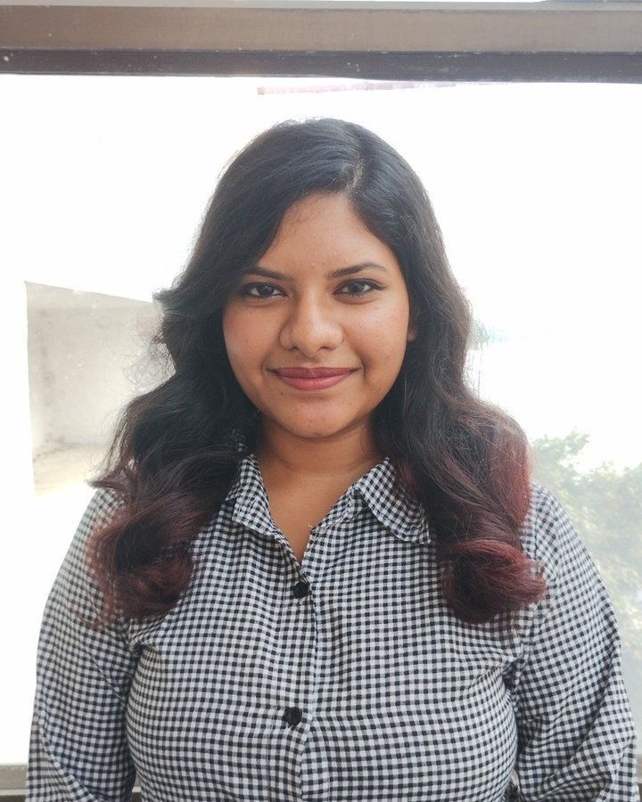
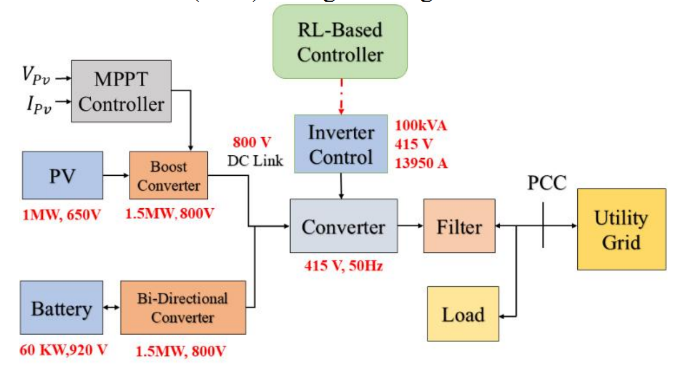
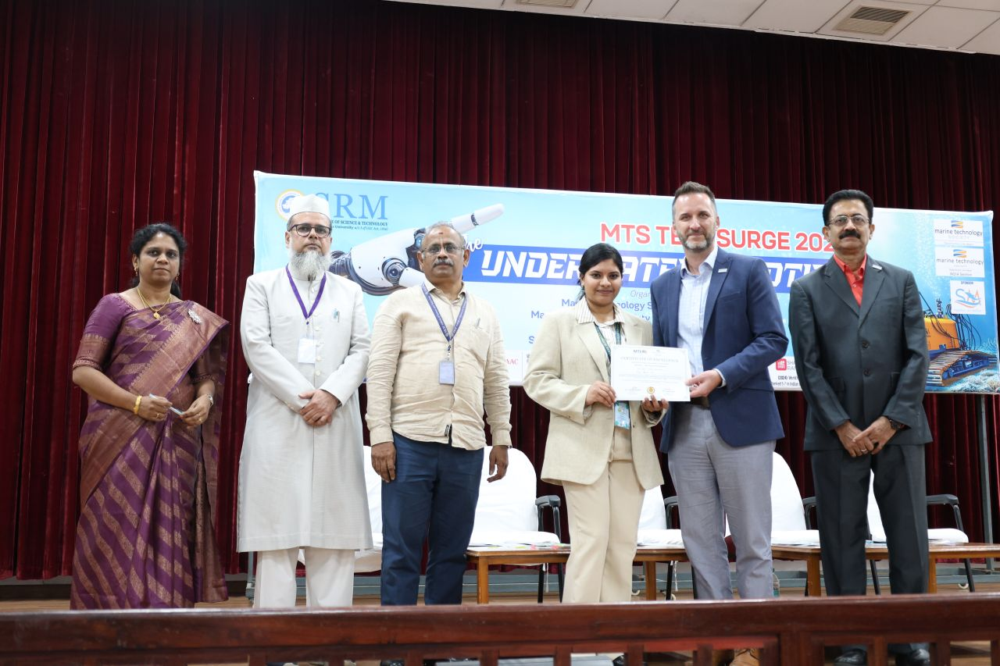
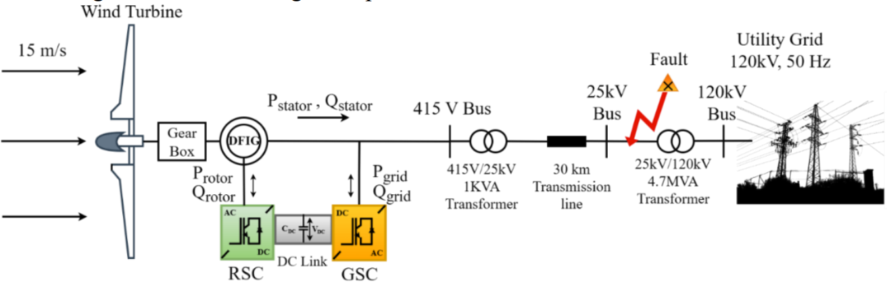
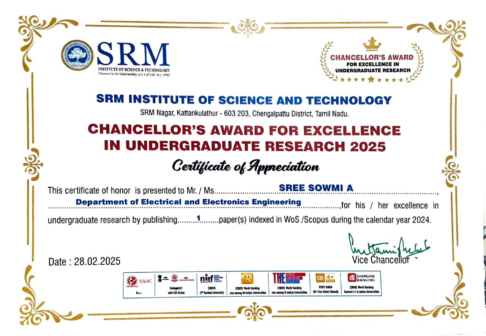
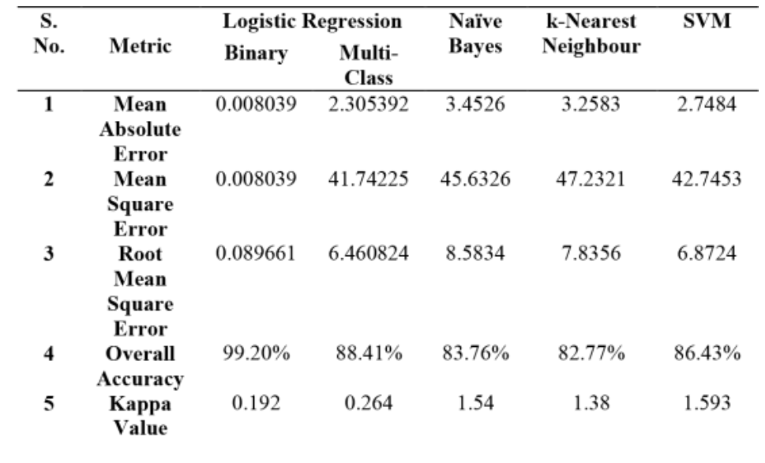
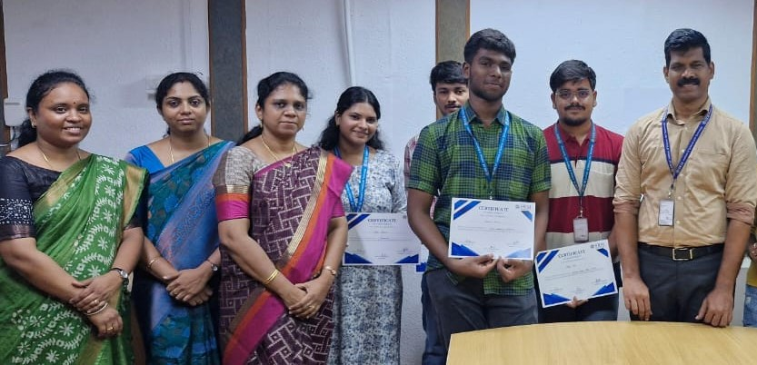

Designing resilient, intelligent power systems.
I’m Sree Sowmi Ananthasayanam, a research-oriented Electrical and Electronics Engineering undergraduate at SRM Institute of Science and Technology, Kattankulathur. I bridge fundamental electrical engineering with emerging computing and control methods through hands-on research, interdisciplinary projects and technical publications.

From first principles to intelligent control.
My primary technical interests centre on intelligent energy systems, renewable energy integration, power electronics, artificial intelligence and sustainable technologies. Since my first year I have focused on connecting core electrical engineering with computing and control methodologies, and on documenting that work in publications.
Currently an undergraduate researcher at CIMES, SRMIST, working on multi-agent AI for microgrid energy management, and part of the InSPIRE India–Japan programme at Shizuoka University[cite: 4].
Small steps, solid work, and a few big moments along the way.

3rd Research Paper · RL-Based PV–Battery Microgrid Control
Published in IEEE Xplore, exploring reinforcement learning-based voltage and frequency stability control in PV–battery microgrids with EV charging and vehicle-to-grid (V2G) integration.

Selected for InSPIRE-SI · Shizuoka University, Japan
Selected for an India–Japan collaborative program focused on renewable energy, decarbonization, and social innovation[cite: 4].

Graduate Engineer Trainee, R&D · Hero MotoCorp
Secured a GET role in R&D with a ₹9 LPA CTC and a ₹2.5 lakh joining bonus, bringing the total package to ₹11.5 lakh.

Smart India Hackathon 2026 · Internal Shortlist
Shortlisted internally with the CIMES SRMIST team to develop and pitch innovative engineering solutions.

PR & Media Head · SRM Marine Technology Society
Took on responsibility for media, branding, and technical outreach for the SRM-MTS Student Chapter.

IEEE RESEM 2026 · MANIT Bhopal
Presented research on reinforcement learning-based control for PV–battery microgrids[cite: 11].

3rd Prize · 5th MTS Nanda Innovation Award
Recognized by the MTS India Section for a CubeSat electrical power subsystem featuring a bidirectional SEPIC converter and smart battery management system.

2nd Research Paper · DFIG Wind Turbine Fault Detection
Published a comparative machine learning study on fault classification in a 9 MW doubly fed induction generator (DFIG) wind energy system in IEEE Xplore[cite: 10].

Undergraduate Researcher · CIMES, SRMIST
Started exploring agentic AI and multi-agent energy management for renewable microgrids, bringing together power systems and intelligent control[cite: 4, 8].

CubeSat EPS Technical Review · Bengaluru
Presented the CubeSat electrical power subsystem architecture and received technical feedback from space industry professionals at ITCA.

IEEE iConSCEPT 2025 · NIT Puducherry
Presented comparative machine learning methods for fault classification in grid-connected wind energy systems[cite: 11].

Vice President · IAEMP SRM Student Chapter
Led student initiatives around energy conservation, technical workshops, and chapter activities.

Chancellor’s Award for Excellence in Undergraduate Research
Received SRMIST's Chancellor's Award in recognition of undergraduate research contributions.

1st Research Paper · Wind Energy Fault Analysis
Published my first IEEE Xplore paper on machine-learning-based fault analysis for grid-connected wind energy conversion systems[cite: 10].

OPAL-RT & RTDS · Real-Time Simulation
Gained training in real-time digital simulation and hardware-in-the-loop concepts for wind energy conversion controllers.

Excellence in Research · First-Year EEE
Received a Certificate of Achievement from the Department of Electrical and Electronics Engineering, SRMIST, for research excellence[cite: 8].

First Conference Presentation · IEEE ICSPCRE 2024
Presented research on wind energy conversion system fault diagnostics at NIT Rourkela[cite: 8, 11].

Research Intern · CSIR–CSIO
Worked on modelling and simulation of a solar-powered docking system for an IoT-enabled air purification and UV disinfection unit[cite: 7].

Earth Resistance & Grounding Audit
Participated in electrical grounding audits and earth resistance testing under the guidance of BEE-certified energy auditors.

Bio-Oil-Based Transformer Insulation Research
Investigated natural ester blends as potential transformer insulating fluids, studying their properties against relevant IEC standards and presenting the work at Nexus-2024[cite: 7, 11].
Featured projects.
Each project has its own page with my contribution, scope and documented outcomes.
I aim to develop resilient, intelligent power architectures by combining power electronics, modern control theory and machine learning, advancing robust solutions for renewable microgrids, distributed energy resources and space power applications.
Let’s talk about energy, research and ideas.
I’m happy to connect about intelligent energy systems, power electronics, applied AI and research collaboration.